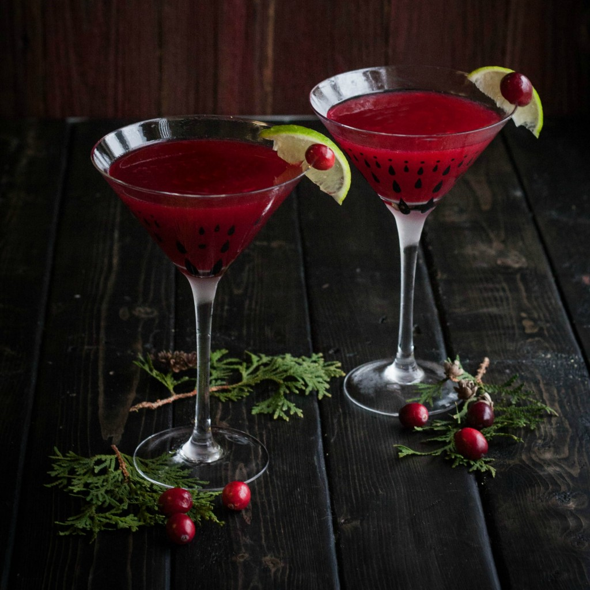

Cosmopolitan

Total Time:
15 min
Prep:
15 min
Difficulty: Easy
Ingredients
* Ice cubes
* 1 1/2 fluid ounces lemon vodka
* 1 fluid ounce Cointreau
* 1 fluid ounce cranberry juice
* 2 teaspoons freshly squeezed lime juice
* Long thin piece orange zest
Instruction
Fill a cocktail shaker with ice. Add the vodka, Cointreau, and cranberry and lime juices.
Cover and shake vigorously to combine and chill. Strain the cosmopolitan into a chilled martini glass.
Twist the orange zest over the drink and serve.
Note: The drink can also be stirred in a pitcher.